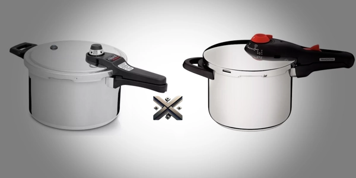

Se você está pesquisando qual é a melhor panela de pressão para comprar em 2025, provavelmente se deparou com dois modelos que lideram o mercado: Nigro Eterna e Tramontina Solar. Ambas têm avaliações excelentes, mas cada uma atende a perfis diferentes de uso. Analisando segurança, capacidade, material, durabilidade, preço e usabilidade.
A Nigro Eterna 6L é famosa pela robustez e ótimo custo-benefício, enquanto a Tramontina Solar conquista pelo design sofisticado e durabilidade do aço inox. Escolher entre as duas depende do que você mais valoriza na cozinha.

A panela de pressão é mais do que um utensílio de cozinha — é uma facilitadora do dia a dia. Projetada para agilizar o cozimento, a panela de pressão concentra o vapor dentro da câmara fechada, o que intensifica a pressão interna e permite que a água ultrapasse sua temperatura normal de fervura. Isso faz com que feijão, carne, legumes e grãos cozinhem muito mais rápido que em panelas convencionais.
Esse processo acontece graças a um sistema de fechamento hermético e válvulas de segurança que controlam o nível de pressão. Quando usada da forma correta, a panela de pressão é extremamente segura, e hoje já existem modelos que contam com até 7 travas de proteção. Além das versões tradicionais em alumínio ou inox, o mercado oferece também panelas de pressão elétricas, com funções automáticas e painéis digitais para mais comodidade.
Seja para preparar uma refeição mais rápida ou para extrair o máximo de sabor dos ingredientes, a panela de pressão continua sendo uma aliada indispensável na cozinha moderna. Prática, eficiente e versátil, ela faz parte da rotina de quem valoriza tempo e sabor na mesma medida.
A Nigro Eterna é uma panela clássica, bastante conhecida por quem valoriza segurança e desempenho. Seu design robusto é pensado para resistir a altas pressões e ao uso frequente, sendo ideal tanto para o dia a dia quanto para preparos maiores em ocasiões especiais. A versão de 10 litros é uma das preferidas de quem cozinha para muitas pessoas ou trabalha com alimentação, o que mostra sua versatilidade. Além disso, mesmo com seu visual mais tradicional, é um produto nacional com alto padrão de fabricação, o que garante uma longa vida útil com o mínimo de manutenção. Outro diferencial importante é a possibilidade de utilizar o corpo da panela como um caldeirão convencional, aumentando sua funcionalidade na cozinha.
A Tramontina Solar traz uma proposta mais moderna, com acabamento sofisticado e foco em eficiência térmica. Seu fundo triplo ajuda a distribuir o calor uniformemente, o que evita que os alimentos grudem ou cozinhem de forma desigual. É ideal para cozinhas planejadas ou para quem gosta de utensílios com visual mais elegante. O aço inoxidável se destaca pela facilidade na higienização e pela resistência excepcional à corrosão, garantindo longa vida útil mesmo com o uso frequente. Seu uso é simples e intuitivo, o que agrada iniciantes ou quem tem receio de usar panela de pressão. Sem dúvidas, é uma opção confiável, bonita e funcional para cozinhar com segurança e estilo. Outro destaque é a vedação eficiente, que mantém o vapor constante, garantindo cozimento uniforme e menos perda de nutrientes.
As avaliações de usuários são fontes valiosas para entender como as panelas se comportam no dia a dia. Tanto a Nigro Eterna quanto a Tramontina Solar recebem elogios consistentes por sua performance, segurança e durabilidade. No entanto, alguns detalhes aparecem com frequência nas avaliações e podem influenciar sua decisão de compra.
Usuários da Nigro Eterna frequentemente destacam sua construção sólida, facilidade no encaixe da tampa e rapidez no preparo dos alimentos. Outro ponto muito citado é a confiança que o produto transmite — a sensação de que a panela é realmente segura e resistente. Muitos consumidores afirmam já ter o modelo há anos e que ele continua funcionando como novo, o que reforça sua reputação de longa vida útil. Em geral, os poucos pontos negativos se referem ao peso nas versões maiores, que pode ser um desafio para quem tem pouca força ou problemas de mobilidade.
A Tramontina Solar recebe muitos elogios pela sua estética sofisticada e facilidade de uso. Usuários comentam que é muito simples de limpar, mesmo após o preparo de alimentos gordurosos ou que normalmente grudam. Outro ponto citado é o fechamento externo, considerado mais prático para quem não tem experiência com panela de pressão. Ainda que tenha menos sistemas de segurança que a Nigro, os relatos mostram confiança no uso. Alguns consumidores apontam que o aquecimento pode ser um pouco mais lento devido à espessura do fundo triplo, mas esse detalhe é compensado pela economia de tempo com a limpeza posterior.
Segurança é o principal fator na escolha de uma panela de pressão, e é onde a Nigro Eterna realmente se destaca. Com 5 sistemas independentes de segurança, ela foi projetada para minimizar qualquer risco de acidentes, mesmo em situações de uso intenso. Entre os sistemas estão a válvula reguladora, válvula de segurança, pino de alívio, tampa com trava automática e sistema antiabertura com pressão interna. Todos esses mecanismos garantem que a panela não será aberta enquanto ainda houver pressão dentro, o que oferece tranquilidade ao usuário.
Já a Tramontina Solar conta com 3 sistemas, o que ainda é considerado seguro segundo as normas do Inmetro. Seu fechamento externo facilita a visualização do travamento, o que é uma vantagem para usuários iniciantes. Além disso, o aço inox contribui para suportar altas temperaturas e garantir estabilidade. Apesar de ter menos sistemas que a Nigro, a Solar é segura e aprovada para uso doméstico sem restrições. A escolha vai depender se você prefere máxima segurança com mais mecanismos ou simplicidade com eficiência comprovada.